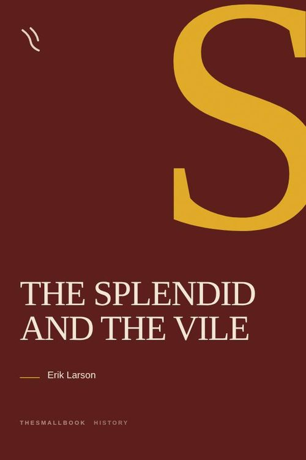

Library › Authors › Erik Larson
Books by Erik Larson
Erik Larson has one book in the library. Every book here is read down to the big idea, the lessons, the lines worth keeping and the actions worth taking. Start with the summary, then buy the full book if it earns a place on your shelf.

The Splendid and the Vile
2020 · 11 min · 8 lessons
Erik Larson follows Churchill's first year as prime minister through the Blitz, told from the war rooms, the shelters and the diaries.
Larson's subject is how a leader holds a society together under sustained attack, and the mechanics are unglamorous: visits to bombed streets, speeches that set a tone, the management of his own fear and his family's. The book is about morale as infrastructure, and about the price of performing confidence when you do not have it.
Lessons in the summary
- The First Week
- Visiting the Ruins
- The Speeches
- The Rooms Where It Was Run
- The Family
- The City Under Attack
- The Private Despair
- What Held
Lines worth keeping
- Morale is a material of war, and it has to be manufactured.
- Churchill's confidence was a performance he maintained while afraid.
- The people being bombed are the ones who decide whether a country continues.
Questions Erik Larson helps answer
Read nearby authors next
- Bill Bryson 2 books
- David Grann 2 books
- Isabel Wilkerson 2 books
- Ramachandra Guha 2 books
- Siddhartha Mukherjee 2 books
- Walter Isaacson 2 books
- William Dalrymple 2 books
- A.L. Basham 1 book